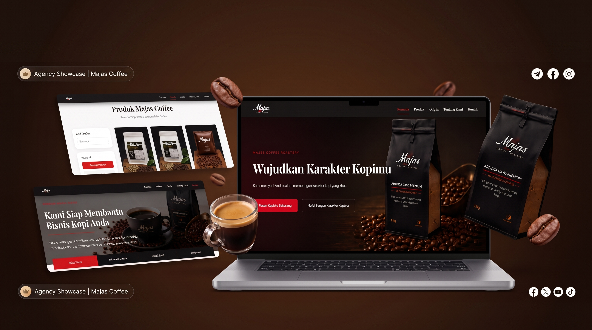

Real Client ProjectMajas Coffee Roastery
A dynamic company profile and product management website developed for a real UMKM client to strengthen brand clarity, digital presence, and product information.
Role
Project Leader & Developer
Team
3 People
Duration
1 Semester